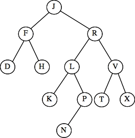
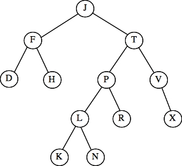

2013 CS140 Final Exam - Answers and Grading
James S. Plank
Question 1 - Basic Programming - 10 Points
Here you simply read the lines and put them into a data structure
which allows you to retain the last n lines efficiently. It's
not easy with a vector, because you cannot insert or delete
efficiently from the front of a vector -- you do better to use a
deque or list from the STL, or a Queue or
Dlist from the lecture notes/labs. In the code below, I
create the deque in reverse order, and then create the return vector
from it
(this in q1.cpp):
#include <vector>
#include <deque>
#include <string>
#include <iostream>
using namespace std;
vector <string> get_n_lines(int n)
{
vector <string> rv;
deque <string> q;
string s;
int i;
while (getline(cin, s)) {
q.push_front(s);
if (q.size() > n) q.pop_back();
}
for (i = 0; i < q.size(); i++) rv.push_back(q[i]);
return rv;
}
|
Grading
- Did you use a correct data structure? Deque, Queue or List was worth 6 points, Vector and Stack were worth three points. Set was worth two, and anything else zero.
- Was your solution O(n) in space? This was worth two points.
In other words, even if you used a
Deque, if you simply created it with push_front() and didn't
make sure that its maximum size was n, you didn't get these two points.
- Did you set up a return value of the correct type and return it? One point.
- Did you create the return value correctly? One point.
Question 2 - Basic Data Structures and Big-O - 12 Points
- A: Finding an item in a AVL tree with n items: O(log(n))
- B: Erasing the first item from a linked list with n items: Linked lists work in constant time: O(1)
- C: Performing a rotation on a node in an AVL tree with n items: Rotations manipulate a constant
number of pointers: O(1)
- D: Deleting an item from an AVL tree with n items. O(log(n))
- E: Finding an item in a regular binary search tree with n items. The search tree can be a search line: O(n)
- F: Erasing the first item from a deque with n items. Deques do this in constant time: O(1)
- G: Deleting an item from a set with n items. Sets and maps are just like AVL trees: O(log n)
- H: Finding an item that is in a hash table with n items that had no collisions when the items were inserted.
If there were no collisions, then every key is at its hash value in the hash table. Therefore, it will take constant time to
find it: O(1)
- I: Calling Push() on a stack with n items. Again, O(1) -- see the answer to Question 5.
- J: Inserting an item into a map with n items. O(log(n))
- K: Erasing the first item from a vector with n items. Vectors don't support this in constant time: O(n)
- L: Finding an item in a linked list with n items. To find an item in a linked list, you have to traverse the
list from the front: O(n)
Grading: 1 point per question. In your grade files, I used the following abbreviations:
- "1" = O(1)
- "l" = O(log(n))
- "n" = O(n)
- "nl" = O(n(log(n))
- "2" = O(n2)
- "!" = O(n!)
Question 3 - Were you in this class? - 10 Points
Straight from the lecture notes:
void Solve(Towers *t, int from, int to, int npieces)
{
int i, other;
if (npieces == 1) {
t->Make_Move(from, to);
return;
}
for (i = 0; i < 3; i++) if (i != from && i != to) other = i;
Solve(t, from, other, npieces-1);
t->Make_Move(from, to);
Solve(t, other, to, npieces-1);
}
|
Grading was subjective here. I gave you some credit if you at least gave me a base
case and some recursion, but not much if it wasn't too cogent.
Question 4 - Binary search trees 10 points
I quote from the lecture notes:
Case 1: The node has no children (it's a leaf node). You can simply
delete it.
Case 2: The node has just one child. To delete the node, replace it
with that child.
Case 3: The node has two children. In this case, you find the node
in the tree whose value is the greatest value less than (or equal to) the node's
value. That will be the rightmost node in the subtree rooted by the left child.
That node will not have a right child. First, delete it. Then use it to replace
the node that you are deleting.
Grading
- Case 1: 3 points
- Case 2: 3 points
- Case 3: 4 points
Question 5 - Stack em up - 10 points
Again, straight from the lecture notes:
void Stack::Push(string s)
{
Stacknode *newnode;
newnode = new Stacknode;
newnode->s = s;
newnode->next = top;
top = newnode;
}
string Stack::Pop()
{
string rv;
Stacknode *oldtop;
if (top == NULL) {
cerr << "Error: pop() called on an empty stack\n";
exit(1);
}
oldtop = top;
top = oldtop->next;
rv = oldtop->s;
delete oldtop;
return rv;
}
|
Grading
Five points for each method.
Question 6 - Traversals - 12 Points
- Tree 1: Preorder: J D H F T P L K N R V X -- k
- Tree 1: Postorder: F H D K N L R P X V T J -- g
- Tree 2: Preorder: J F D H R L K P N V T X -- m
- Tree 2: Postorder: D H F K N P L T X V F J -- d
Grading
Three points per traversal.
Question 7 - Traversals - 12 points
Tree 1: When you insert N, you get the left tree below. That is imbalanced at node J, and it's
a Zig-Zag, so you must perform a double-rotation about node L to get the right tree.
The answer is I.
|  |
 |
Tree 2: When you delete M, you replace it with L. That tree is fine, so the
answer is J.
Tree 3: When you insert X, you get the left tree below. That is imbalanced at node T, and it's
a Zig-Zig, so you must perform a rotation about node V to get the right tree.
The answer is L.
Tree 4: When you delete G, you get the left tree below. That is imbalanced at node J, and it's
a Zig-Zag, so you must perform a double rotation about node P to get the right tree.
The answer is F.
|  |
 |
Tree 5: When you delete W, you get the left tree below. That is imbalanced at node V, and it's
a Zig-Zig, so you must perform a single rotation about node R to get the right tree.
The answer is L.
Tree 6: When you delete B, you get an imbalance about D, which you fix
by a double-rotation about G. That is pictured to the left. That is imbalanced at node J, and it's
a Zig-Zag, so you must perform a double rotation about node P to get the right tree.
The answer is F.